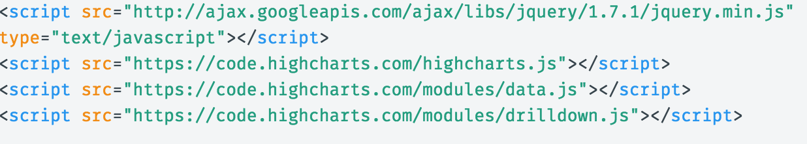
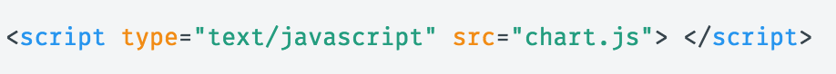
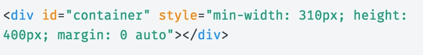
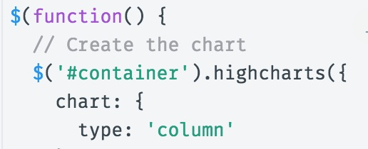
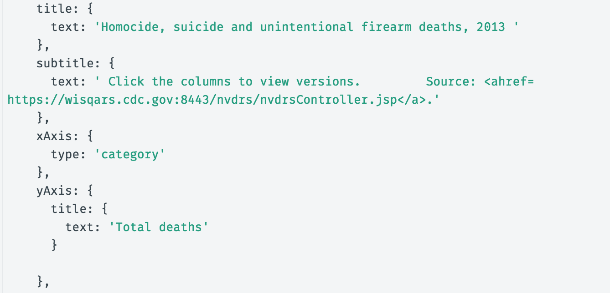
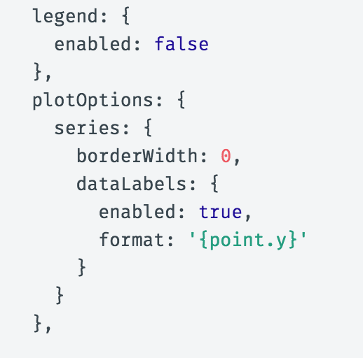
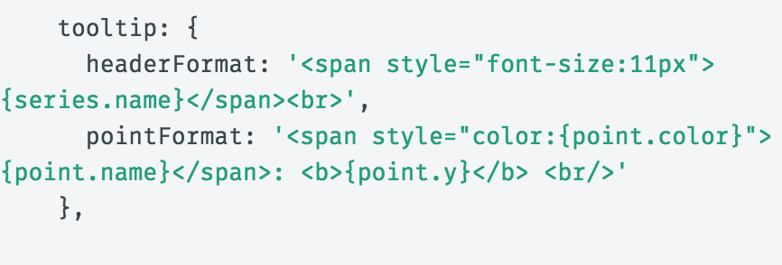
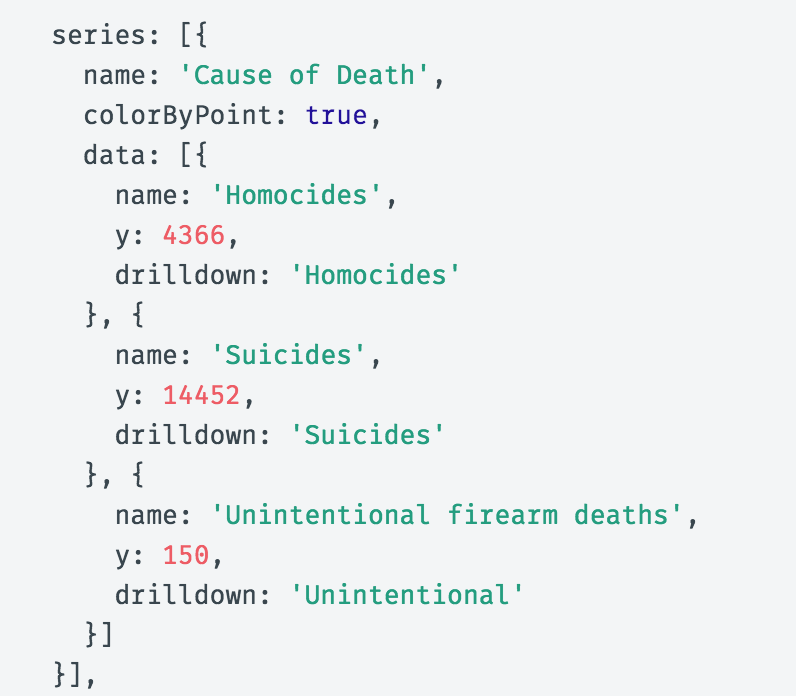
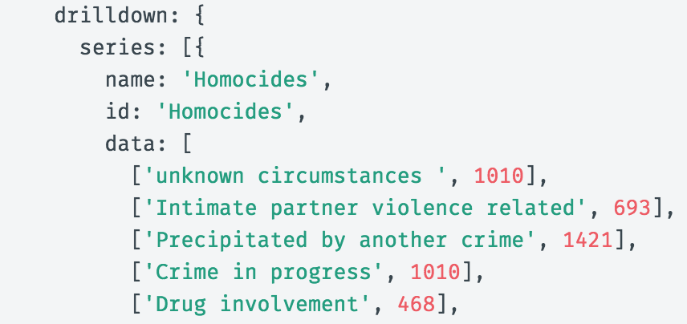

Highcharts is a library of code which can be used to make interactive charts.
Library of code - Highcharts.comI picked a column charts with the drill down option
The chart I usedHighcharts gives the user a jsfiddle button underneath the demo of their charts. This gives the user the code in jsfiddle and makes it really easy to mess around and learn how the code is working in the program.
1.) Add in all the links necessary to run Highcharts codes (all are provided by Highscharts but jquery).
2.) Links the js file to the html document
3.) Creates the space that will hold the chart in the html document.
4.) This line of code is in the javascript document. It grabs the container from the html document and says that in that container we want a chart and the type of chart we are making is a column chart. Chart type can be changed to any kind of chart that Highcharts provides.
5.) Creates all the labels and titles.
6.) Makes it so that a lengend doesn't appear, makes sure the columns start at the x-axis, and labels the top of the columns with the number.
7.) This creates the hover which shows series name(cause of death) at the top using 11 px font. Below that it shows the name on the x-axis (found in the code later in the data section) makes it so it shows up the same color as the column then add the amount next to it.
8.)Makes the colors different for each column, creates the series name, plots the set of columns and tells it that when the user clicks on that column it will use the drill down function to transfer to another chart with different data (connected later in code)
9.)Lastly, create all the data that will be shown when using the drilldown effect.
I was not able to figure out how to remove the y-axis titles after the drilldown sequence.
The a major limitation is that I could not get the title to change to the y-axis name of the column the user clicks on to get more information. This makes the title of the other charts somewhat misleading since they are more narrow than the orignial chart that comes up first.
This infographic uses bar charts to breaks down the Winter Olympics into the competing categories for each year then shows the number of men and women that participated. It is similar to my infographic because users can click on a bar chart and it will break down the information even further. For example if the user clicks on the figure skating bar chart then new charts are created, which shows the different competitions within figure skating.
The Chicago Tribune did a graphic with 3 separate bar charts which show the number of arrest, contact cards, and AVNO's in Chicago from 2011 to 2016. The user gets to each chart by clicking arrows to go to the pervious or next bar chart I think this graphic could have benefited from my charts because it transitions smoother than the Tribunes. The Tribune used dark blue to make this years numbers standout for each category. Maybe they could have shown each category with 2016 data then allow the user to click on each one and show the change over time since 2011 for each one.